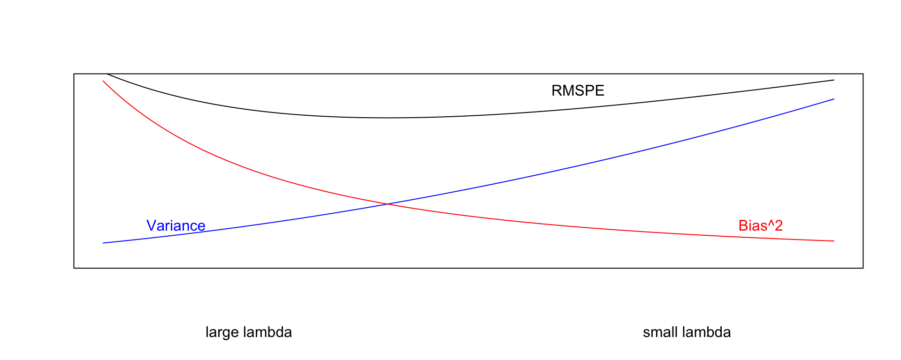
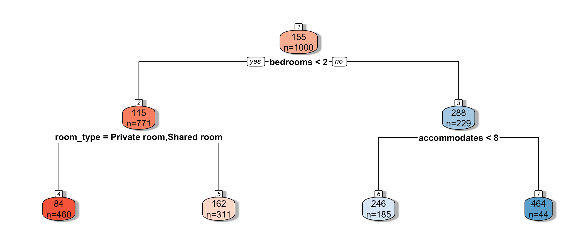
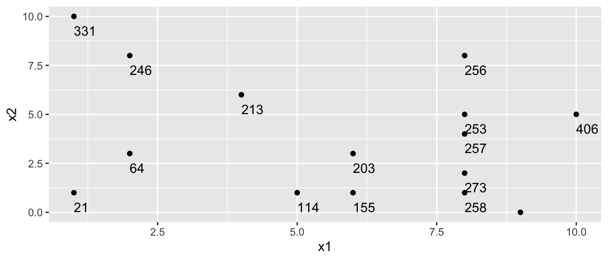
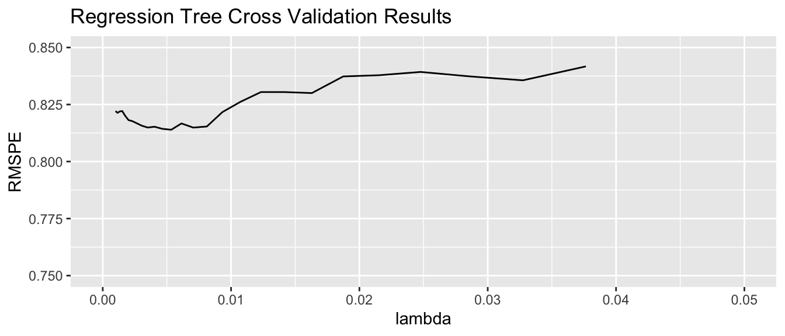
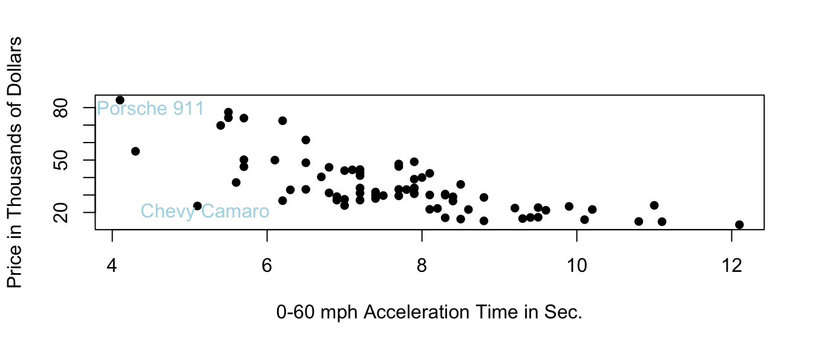
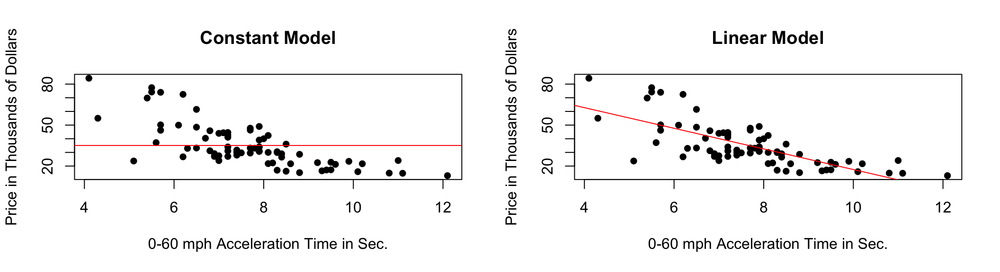
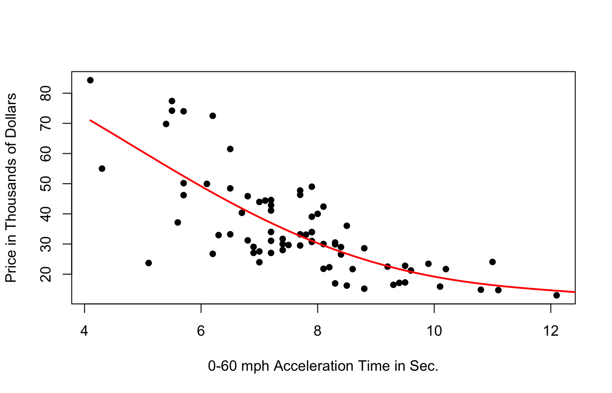
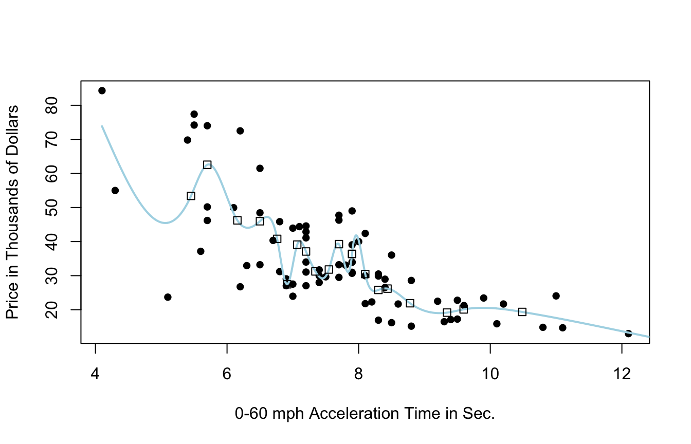
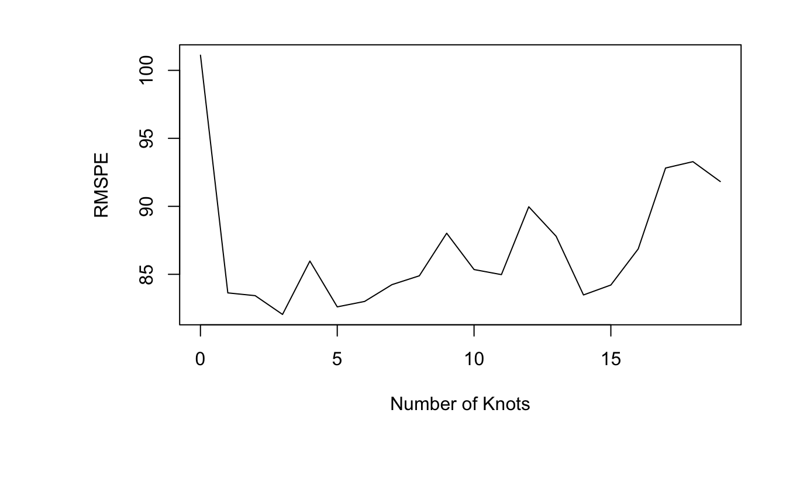

Chapter 9 Advanced Regression and Nonparametric Approaches
9.1 Penalized Regression: Ridge and Lasso
9.1.1 Regression on Air BnB Dataset - Some Exp. Vars.
M1 <- lm(data=Train, price ~ bedrooms + accommodates + bathrooms + beds +
city +room_type + cancellation_policy + cleaning_fee)
coef(M1)## (Intercept) bedrooms
## 58.140180 48.279110
## accommodates bathrooms
## 11.891802 49.027248
## beds cityChicago
## -7.272873 -14.859591
## cityDC cityLA
## 31.798209 6.897891
## cityNYC citySF
## 17.213827 69.611515
## room_typePrivate room room_typeShared room
## -85.387718 -96.893873
## cancellation_policymoderate cancellation_policystrict
## -19.243073 -16.066733
## cancellation_policysuper_strict_30 cleaning_feeTRUE
## 88.824633 -20.3231379.1.2 Regression on Air BnB Dataset - All Exp. Vars.
M2 <- lm(data=Train, price ~ .)
head(coef(M2))## (Intercept) id property_typeCondominium
## -15242.3300816057399 0.0000007952311 -10.0250181873609
## property_typeHouse property_typeTownhouse property_typeOther
## 2.1010429305294 -9.1810124499946 28.03773129770069.1.3 Complexity in Model Coefficients
We've thought about complexity in terms of the number of terms we include in a model, as well as whether we include quadratic terms and interactions
We can also think about model complexity in terms of the coefficients \(b_1, \ldots, b_p\).
Larger values of \(b_1, \ldots, b_p\) are associated with more complex models. Smaller values of \(b_0, b_1, \ldots, b_p\) are associated with less complex models. When \(b_j=0\), this mean variable \(j\) is not used in the model.
9.1.4 Penalized Regression
- We've seen that in ordinary least-squares regression, \(b_0, b_1, \ldots, b_p\) are chosen in a way that to minimizes
\[ \displaystyle\sum_{i=1}^n (y_i -\hat{y}_i)^2 = \displaystyle\sum_{i=1}^n (y_i -(b_0 + b_1x_{i1} + b_2{x_i2} + \ldots +b_px_{ip}))^2 \]
- When \(p\) is large, and we want to be careful of overfitting, a common approach is to add a "penalty term" to this function, to incentivize choosing low values of \(b_1, \ldots, b_p\).
Specifically, we minimize:
\[ \displaystyle\sum_{i=1}^n (y_i -\hat{y}_i)^2 + \displaystyle\sum_{j=1}^pp(b_j) = \displaystyle\sum_{i=1}^n (y_i -(b_0 + b_1x_{i1} + b_2x_{i2} + \ldots + b_px_{ip}))^2 + \displaystyle\sum_{j=1}^pp(b_j)\], where \(p\) is a function that increases as \(b_j\) gets farther from 0.
9.1.5 Ridge Regression
In Ridge regression, we let \(p_j(b_j) = b_j^2\).
Thus, \(b_0, b_1, \ldots, b_p\) are chosen in a way that to minimizes
\[ \begin{aligned} & \displaystyle\sum_{i=1}^n (y_i -\hat{y}_i)^2 + \lambda\displaystyle\sum_{j=1}^pb_j^2\\ = & \displaystyle\sum_{i=1}^n (y_i -(b_0 + b_1x_{i1} + b_2x_{i2} + \ldots + b_px_{ip}))^2 + \lambda\displaystyle\sum_{j=1}^pb_j^2 \end{aligned} \]
where \(\lambda\) is a pre-determined positive constant.
Larger values of \(b_j\) typically help the model better fit the training data, thereby making the first term smaller, but also make the second term larger.
The idea is the find optimal values of \(b_0, b_1, \ldots, b_p\) that are large enough to allow the model to fit the data well, thus keeping the first term (RSS) small, while also keeping the penalty term small as well.
9.1.6 Simple Example
head(df)## x1 x2 x3 x4 x5 y
## 1 4.139206 2.4498870 4.834715 0 1 18.1
## 2 2.850317 -0.2666719 5.219334 2 1 1.8
## 3 9.869605 -0.8287838 7.676558 2 0 8.9
## 4 1.423671 0.4906483 7.779525 4 1 7.3
## 5 8.244600 0.2575340 6.912677 4 1 15.2
## 6 5.404841 1.0488419 8.405193 3 0 10.49.1.7 Standardizing
It is important to standardize each explanatory variable (i.e. subtract the mean and divide by the standard deviation).
This ensures each variable has mean 0 and standard deviation 1.
Without standardizing the optimal choice of \(b_j\)'s would depend on scale, with variables with larger absolute measurements having more influence.
We'll standardize the response variable too. Though this is not strictly necessary, it doesn't hurt. We can always transform back if necessary.
Standardization is performed using the
scalecommand in R.
9.1.8 Standardizing Dataframe
df <- data.frame(scale(df))
head(df)## x1 x2 x3 x4 x5 y
## 1 -0.45459759 1.83361148 -0.7135063 -1.5278568 0.58554 1.50064128
## 2 -0.88764549 -0.52845565 -0.5195898 -0.1909821 0.58554 -1.30170193
## 3 1.47073150 -1.01721597 0.7192874 -0.1909821 -1.46385 -0.08104937
## 4 -1.36697736 0.13003961 0.7712009 1.1458926 0.58554 -0.35612600
## 5 0.92475383 -0.07265499 0.3341557 1.1458926 0.58554 1.00206488
## 6 -0.02936316 0.61539287 1.0866488 0.4774553 -1.46385 0.176834989.1.9 Ordinary Least-Squares Model
M_OLS <- lm(data=df, y~.)
summary(M_OLS)##
## Call:
## lm(formula = y ~ ., data = df)
##
## Residuals:
## 1 2 3 4 5 6 7
## 0.01093 -0.15412 0.02664 0.11262 -0.04872 -0.02664 0.07929
##
## Coefficients:
## Estimate Std. Error t value Pr(>|t|)
## (Intercept) 0.0000000000000001327 0.0816209130227057295 0.000 1.0000
## x1 0.8474116247443916894 0.1147677904948321836 7.384 0.0857 .
## x2 0.9136565883555646250 0.1417118779920441829 6.447 0.0980 .
## x3 0.5430015911020581454 0.3171076433134487060 1.712 0.3365
## x4 -0.1626972125210692788 0.2460100351057598889 -0.661 0.6280
## x5 0.5781111710181862096 0.2229383124515697534 2.593 0.2343
## ---
## Signif. codes: 0 '***' 0.001 '**' 0.01 '*' 0.05 '.' 0.1 ' ' 1
##
## Residual standard error: 0.2159 on 1 degrees of freedom
## Multiple R-squared: 0.9922, Adjusted R-squared: 0.9534
## F-statistic: 25.53 on 5 and 1 DF, p-value: 0.14919.1.10 Ridge Regression Model (\(\lambda=1\))
M_Ridge1 <- lm.ridge(data=df, y~., lambda = 1)
head(M_Ridge1$coef)## x1 x2 x3 x4 x5
## 0.545775362 0.745085871 0.209240885 -0.002114925 0.2318808679.1.11 Comparison of Coefficients
b_OLS <- round(coef(M_OLS),3)
b_Ridge1 <- round(c(0,M_Ridge1$coef),3)
data.frame(b_OLS, b_Ridge1)## b_OLS b_Ridge1
## (Intercept) 0.000 0.000
## x1 0.847 0.546
## x2 0.914 0.745
## x3 0.543 0.209
## x4 -0.163 -0.002
## x5 0.578 0.2329.1.12 Predictions and Residuals
| y | Pred_OLS | Pred_Ridge1 | OLS_Resid | Ridge1_Resid |
|---|---|---|---|---|
| 1.5006413 | 1.4897102 | 1.1965629 | 0.0109311 | 0.3040784 |
| -1.3017019 | -1.1475867 | -0.9189041 | -0.1541152 | -0.3827978 |
| -0.0810494 | -0.1076928 | -0.1552730 | 0.0266434 | 0.0742236 |
| -0.3561260 | -0.4687439 | -0.3828531 | 0.1126179 | 0.0267271 |
| 1.0020649 | 1.0507862 | 0.7062330 | -0.0487214 | 0.2958318 |
| 0.1768350 | 0.2034784 | 0.3558117 | -0.0266434 | -0.1789767 |
| -0.9406638 | -1.0199514 | -0.8015775 | 0.0792875 | -0.1390863 |
- The ridge predictions tend to be closer to the mean y-value of 0.
9.1.13 Choosing \(b_j\) in OLS
In OLS, we choose \(b_0, b_1, \ldots, b_p\) are chosen in a way that minimizes
\[ \displaystyle\sum_{i=1}^n (y_i -\hat{y}_i)^2 = \displaystyle\sum_{i=1}^n (y_i -(b_0 + b_1x_{i1} + b_2x_{i2} + \ldots + b_px_{ip}))^2 \]
sum((y-Pred_OLS)^2)## [1] 0.04663381sum((y-Pred_Ridge1)^2)## [1] 0.3841155Not surprisingly the OLS model achieves smaller \(\displaystyle\sum_{i=1}^n (y_i -\hat{y}_i)^2\). This has to be true, since the OLS coefficients are chosen to minimize this quantity.
9.1.14 Penalty Term
In Ridge regression, we penalize estimates that are far from 0.
sum(coef(M_OLS)[2:6]^2)## [1] 2.208408sum(coef(M_Ridge1)[2:6]^2)## [1] 1.1090089.1.15 Choosing \(b_j\) in Ridge Regression (\(\lambda=1\))
In ridge regression, we choose \(b_0, b_1, \ldots, b_p\) are chosen in a way that minimizes
\[ \begin{aligned} Q=& \displaystyle\sum_{i=1}^n (y_i -\hat{y}_i)^2 + \lambda\displaystyle\sum_{j=1}^pb_j^2\\ = & \displaystyle\sum_{i=1}^n (y_i -(b_0 + b_1x_{i1} + b_2x_{i2} + \ldots + b_px_{ip}))^2 + \lambda\displaystyle\sum_{j=1}^pb_j^2 \end{aligned} \]
Using the OLS coefficients, \(\displaystyle\sum_{i=1}^n (y_i -\hat{y}_i)^2 = 0.04663381\), and \(\lambda\displaystyle\sum_{j=1}^pb_j^2=2.208408\), thus \(Q=2.255042\).
Using the Ridge coefficients, \(\displaystyle\sum_{i=1}^n (y_i -\hat{y}_i)^2 = 0.3841155\), and \(\lambda\displaystyle\sum_{j=1}^pb_j^2=1.109008\), thus \(Q=1.493124\).
It makes sense that Q is smaller, using the ridge coefficients. This must be true, since these coefficients were chosen to minimize Q.
9.1.16 Other values of \(\lambda\)
The value of \(\lambda\) is predetermined by the user. The larger the value of \(\lambda\), the more heavily large \(b_j's\) are penalized. A value of \(\lambda=0\) corresponds to ordinary least-squares.
\[ \begin{aligned} Q=& \displaystyle\sum_{i=1}^n (y_i -\hat{y}_i)^2 + \lambda\displaystyle\sum_{j=1}^pb_j^2\\ = & \displaystyle\sum_{i=1}^n (y_i -(b_0 + b_1x_{i1} + b_2x_{i2} + \ldots + b_px_{ip}))^2 + \lambda\displaystyle\sum_{j=1}^pb_j^2 \end{aligned} \]
9.1.17 Predictions using \(\lambda=0.5\), \(\lambda=1\), \(\lambda=2\)
M_Ridge0.5 <- lm.ridge(data=df, y~., lambda = 0.5)
M_Ridge1 <- lm.ridge(data=df, y~., lambda = 1)
M_Ridge2 <- lm.ridge(data=df, y~., lambda = 2)| y | Pred_OLS_0 | Pred_Ridge0.5 | Pred_Ridge1 | Pred_Ridge2 |
|---|---|---|---|---|
| 1.5006413 | 1.4897102 | 1.3131737 | 1.1965629 | 1.0266306 |
| -1.3017019 | -1.1475867 | -1.0259091 | -0.9189041 | -0.7624705 |
| -0.0810494 | -0.1076928 | -0.1619903 | -0.1552730 | -0.1338746 |
| -0.3561260 | -0.4687439 | -0.4312111 | -0.3828531 | -0.3086787 |
| 1.0020649 | 1.0507862 | 0.8518971 | 0.7062330 | 0.5157487 |
| 0.1768350 | 0.2034784 | 0.3284327 | 0.3558117 | 0.3636789 |
| -0.9406638 | -1.0199514 | -0.8743930 | -0.8015775 | -0.7010345 |
- The smaller the value of \(\lambda\), the more complex the model. As \(\lambda\) gets large, the model becomes less complex, and predictions are pulled closer to \(\bar{y}=0\).
9.1.18 Optimal value of \(\lambda\)
- Small values of \(\lambda\) lead to more complex models, with larger \(|b_j|\)'s.
- As \(\lambda\) increases, \(|b_j|\)'s shrink toward 0. The model becomes less complex, thus bias increases, but variance decreases.
- We can use cross validation to determine the optimal value of \(\lambda\)

9.1.19 Ridge Regression on AirBnB Dataset
Train_sc <- Train %>% mutate_if(is.numeric, scale)control = trainControl("repeatedcv", number = 5, repeats=5)
l_vals = 10^seq(-3, 3, length = 100)
set.seed(11162020)
AirBnB_ridge <- train(price ~., data = Train_sc, method = "glmnet", trControl=control ,
tuneGrid=expand.grid(alpha=0, lambda=l_vals))AirBnB_ridge$bestTune$lambda## [1] 0.46415899.1.20 Ridge Regression MSPE by \(\lambda\)

9.1.21 Ridge Regression Coefficients for Optimal Model
OLS_AirBnB <- lm(data=Train_sc, price~.)
OLS_coef <- coef(OLS_AirBnB)
Ridge_coef <- coef(AirBnB_ridge$finalModel, AirBnB_ridge$bestTune$lambda)[,1]
head(data.frame(OLS_coef, Ridge_coef),10)## OLS_coef Ridge_coef
## (Intercept) 30.04775580 0.229367076
## id 0.03375381 0.019037906
## property_typeCondominium -0.06888227 -0.053765129
## property_typeHouse 0.01443634 -0.003516517
## property_typeTownhouse -0.06308308 -0.132078666
## property_typeOther 0.19264829 0.117498437
## room_typePrivate room -0.56281326 -0.351720684
## room_typeShared room -0.59937318 -0.361384788
## accommodates 0.25176666 0.143761719
## bathrooms 0.11843735 0.1174655359.1.22 Lasso Regression
Lasso regression is very similar to ridge regression. We let \(p_j(b_j) = |b_j|\).
Thus, \(b_0, b_1, \ldots, b_p\) are chosen in a way that to minimizes
\[ \begin{aligned} & \displaystyle\sum_{i=1}^n (y_i -\hat{y}_i)^2 + \lambda\displaystyle\sum_{j=1}^p|b_j|\\ = & \displaystyle\sum_{i=1}^n (y_i -(b_0 + b_1x_{i1} + b_2x_{i2} + \ldots + b_px_{ip}))^2 + \lambda\displaystyle\sum_{j=1}^p|b_j| \end{aligned} \]
9.1.23 Lasso Regression on AirBnB Dataset
l_vals = 10^seq(-3, 3, length = 100)
set.seed(11162020)
AirBnB_lasso <- train(price ~., data = Train_sc, method = "glmnet", trControl=control,
tuneGrid=expand.grid(alpha=1, lambda=l_vals))AirBnB_lasso$bestTune$lambda## [1] 0.049770249.1.24 Lasso Regression MSPE by \(\lambda\)

9.1.25 OLS, Ridge, Lasso Coefficients
OLS_AirBnB <- lm(data=Train_sc, price~.)
OLS_coef <- coef(OLS_AirBnB)
Lasso_coef <- coef(AirBnB_lasso$finalModel, AirBnB_lasso$bestTune$lambda)[,1]
head(data.frame(OLS_coef, Ridge_coef, Lasso_coef),10)## OLS_coef Ridge_coef Lasso_coef
## (Intercept) 30.04775580 0.229367076 0.3209095
## id 0.03375381 0.019037906 0.0000000
## property_typeCondominium -0.06888227 -0.053765129 0.0000000
## property_typeHouse 0.01443634 -0.003516517 0.0000000
## property_typeTownhouse -0.06308308 -0.132078666 0.0000000
## property_typeOther 0.19264829 0.117498437 0.0000000
## room_typePrivate room -0.56281326 -0.351720684 -0.4584811
## room_typeShared room -0.59937318 -0.361384788 -0.3930319
## accommodates 0.25176666 0.143761719 0.1409742
## bathrooms 0.11843735 0.117465535 0.10630639.1.26 Comparing RMSPE for OLS, Lasso, Ridge
set.seed(11162020)
AirBnB_OLS <- train(data=Train_sc, price ~ ., method="lm", trControl=control)min(AirBnB_OLS$results$RMSE)## [1] 0.9898462min(AirBnB_ridge$results$RMSE)## [1] 0.7817871min(AirBnB_lasso$results$RMSE)## [1] 0.77174819.2 Decision Trees
9.2.1 Basics of Decision Trees
A decision tree is a flexible alternative to a regression model. It is said to be nonparametric because it does not involve parameters like \(\beta_0, \beta_1, \ldots \beta_p\).
A tree makes no assumption about the nature of the relationship between the response and explanatory variables, and instead allows us to learn this relationship from the data.
A tree makes prediction by repeatedly grouping together like observations in the training data.
We can make predictions for a new case, by tracing it through the tree, and averaging responses of training cases in the same terminal node.
9.2.2 Decision Tree Example

The predicted price of an AirBnB with 3 bedrooms that accommodates 5 is $246.
The predicted price of an AirBnB with 1 bedroom that that is a a full house or apartment (rather than private or shared room is $162).
9.2.3 Partitioning in A Decision Tree
For a quantitative response variable, data are split into two nodes so that responses in the same node are as similar as possible, while responses in the different nodes are as different as possible.
Let L and R represent the left and right nodes from a possible split. Let \(n_L\) and \(n_R\) represent the number of observations in each node, and \(\bar{y}_L\) and \(\bar{y}_R\) represent the mean of the training data responses in each node.
For each possible split, involving an explanatory variable, we calculate:
\[ \displaystyle\sum_{i=1}^{n_L} (y_i -\bar{y}_L)^2 + \displaystyle\sum_{i=1}^{n_R} (y_i -\bar{y}_R)^2 \]
- We choose the split that minimizes this quantity.
9.2.4 Partitioning Example
## [,1] [,2] [,3] [,4] [,5] [,6] [,7] [,8] [,9] [,10] [,11] [,12] [,13] [,14]
## x1 8 2 8 1 8 6 2 5 1 8 4 10 9 8
## x2 5 3 1 1 4 3 8 1 10 8 6 5 0 2
## y 253 64 258 21 257 203 246 114 331 256 213 406 326 273
## [,15]
## x1 6
## x2 1
## y 155
9.2.5 One Possible Split (\(x_1 < 5.5\))
We could split the data into 2 groups depending on whether \(x_1 < 5.5\).

9.2.6 One Possible Split (\(x_1 < 5.5\)) (cont.)
- \(\bar{y}_L = (331+246+213+21+64+114)/6 \approx 164.84\)
- \(\bar{y}_R = (203+155+256+253+257+273+258+326+406)/9 \approx 265.22\)
\[ \begin{aligned} & \displaystyle\sum_{i=1}^{n_L} (y_i -\bar{y}_L)^2 \\ & =(331-164.83)^2+(246-164.33)^2 + \ldots+(114-164.33)^2 \\ & =69958.83 \end{aligned} \]
\[ \begin{aligned} \displaystyle\sum_{i=1}^{n_R} (y_i -\bar{y}_R)^2 \\ & =(203-265.22)^2+(155-265.22)^2 + \ldots+(406-265.22)^2 \\ & =39947.56 \end{aligned} \]
- 69958.83 + 39947.56 = 109906.4
9.2.7 Second Possible Split (\(x_1 < 6.5\))
We could split the data into 2 groups depending on whether \(x_1 < 6.5\).

9.2.8 Second Possible Split (\(x_1 < 6.5\)) (cont.)
- \(\bar{y}_L = (331+246+213+21+64+114 + 203+155)/8 \approx 168.375\)
- \(\bar{y}_R = (256+253+257+273+258+326+406)/7 \approx 289.857\)
\[ \begin{aligned} & \displaystyle\sum_{i=1}^{n_L} (y_i -\bar{y}_L)^2 \\ & =(331-168.375)^2+(246-168.375)^2 + \ldots+(203-168.375)^2 \\ & =71411.88 \end{aligned} \]
\[ \begin{aligned} \displaystyle\sum_{i=1}^{n_R} (y_i -\bar{y}_R)^2 \\ & =(203-289.857)^2+(155-289.857)^2 + \ldots+(406-289.857)^2 \\ & =19678.86 \end{aligned} \]
- 71411.88 + 19678.86 = 91090.74
The split at \(x1 < 6.5\) is better than \(x_1<5.5\)
9.2.9 Third Possible Split (\(x_2 < 5.5\))
We could split the data into 2 groups depending on whether \(x_2 < 5.5\).

9.2.10 Third Possible Split (\(x_2 < 5.5\)) (cont.)
- \(\bar{y}_L = (331+246+213+256)/4 \approx 261.5\)
- \(\bar{y}_R = (21 + 64 + \ldots + 406)/11 \approx 211.82\)
\[ \begin{aligned} & \displaystyle\sum_{i=1}^{n_L} (y_i -\bar{y}_L)^2 \\ & =(331-261.5)^2+(246-261.5)^2 + (213-261.5)^2+(256-261.5)^2 \\ & =7453 \end{aligned} \]
\[ \begin{aligned} \displaystyle\sum_{i=1}^{n_R} (y_i -\bar{y}_R)^2 \\ & =(21-211.82)^2+(64-211.82)^2 + \ldots+(406-211.82)^2 \\ & =131493.6 \end{aligned} \]
- 7453 + 131493.6 = 138946.6
9.2.11 Comparison of Splits
Of the three split's we've calculated, \(\displaystyle\sum_{i=1}^{n_L} (y_i -\bar{y}_L)^2 + \displaystyle\sum_{i=1}^{n_R} (y_i -\bar{y}_R)^2\) is minimized using \(x_1 < 6.5\).
In fact, if we calculate all possible splits over \(x_1\) and \(x_2\), \(\displaystyle\sum_{i=1}^{n_L} (y_i -\bar{y}_L)^2 + \displaystyle\sum_{i=1}^{n_R} (y_i -\bar{y}_R)^2\) is minimized by splitting on \(x_1 < 6.5\)
9.2.12 First Split

9.2.13 First Split in the Tree

9.2.14 Next Splits
- Next, we find the best splits on the resulting two nodes. It turns out that the left node is best split on \(x_2 < 4.5\), and the right node is best split on \(x_1 < 8.5\).

9.2.15 Next Splits in Tree

9.2.16 Recursive Partitioning
- Splitting continues until nodes reach a certain predetermined minimal size, or until change improvement in model fit drops below a predetermined value
9.2.17 Tree on AirBnB Data

9.2.18 Model Complexity in Trees
The more we partition data into smaller nodes, the more complex the model becomes.
As we continue to partition, bias decreases, as cases are grouped with those that are more similar to themselves. On the other hand, variance increases, as there are fewer cases in each node to be averaged, putting more weight on each individual observation.
Splitting into too small of nodes can lead to drastic overfitting. In the extreme case, if we split all the way to nodes of size 1, we would get RMSE of 0 on the training data, but should certainly not expect RMSPE of 0 on the test data.
The optimal depth of the tree, or minimal size for terminal nodes can be determined using cross-validation.
the
rpartpackage uses a complexity parametercp, which determines how much a split must improve model fit in order to be made. Smaller values ofcpare associated with more complex tree models.
9.2.19 Cross-Validation on AirBnB Data
cp_vals = 10^seq(-3, 3, length = 100)
set.seed(11162020)
AirBnB_Tree <- train(data=Train_sc, price ~ ., method="rpart", trControl=control,
tuneGrid=expand.grid(cp=cp_vals))
AirBnB_Tree$bestTune## cp
## 13 0.005336699
9.2.20 Comparing OLS, Lasso, Ridge, and Tree
min(AirBnB_OLS$results$RMSE)## [1] 0.9898462min(AirBnB_ridge$results$RMSE)## [1] 0.7817871min(AirBnB_lasso$results$RMSE)## [1] 0.7717481min(AirBnB_Tree$results$RMSE)## [1] 0.8139371In this situation, the tree outperforms OLS, but does not do as well as lasso. The best model will vary depending on the nature of the data. We can use cross-validation to determine which model is likely to perform best in prediction.
9.2.21 Random Forest
A popular extension of a decision tree is a random forest.
A random forest consists of many (often ~10,000) trees. Predictions are made by averaging predictions from individual trees.
- In order to ensure the trees are different from each other:
- each tree is grown from a different bootstrap sample of the training data.
- when deciding on a split, only a random subset of explanatory variables are considered.
- each tree is grown from a different bootstrap sample of the training data.
Growing deep trees ensures low bias. In a random forest, averaging across many deep trees decreases variance, while maintaining low bias.
9.3 Regression Splines
9.3.1 Regression Splines
We've seen that we can use polynomial regression to capture nonlinear trends in data.
A regression spline is a piecewise function of polynomials.
Here we'll keep thing simple by focusing on a spline with a single explanatory variable. Splines can also be used for multivariate data.
9.3.2 Price of 2015 New Cars

9.3.3 Two Models with High Bias

9.3.4 Cubic Model

9.3.5 Cubic Splines

9.3.6 Cubic Splines

- region boundaries are called knots
9.3.7 Cubic Spline with 5 Knots

9.3.8 Cubic Spline with 10 Knots

9.3.9 Cubic Spline with 20 Knots

9.3.10 Model Evaluation
- predicted price for 35 new 2015 cars not in original dataset
- calculated mean square prediction error (MSPE)

9.3.11 Implementation of Splines
Important Considerations:
- how many knots
- where to place knots
- degree of polynomial
The best choices for all of these will vary between datasets and can be assessed through cross-validation.
--->